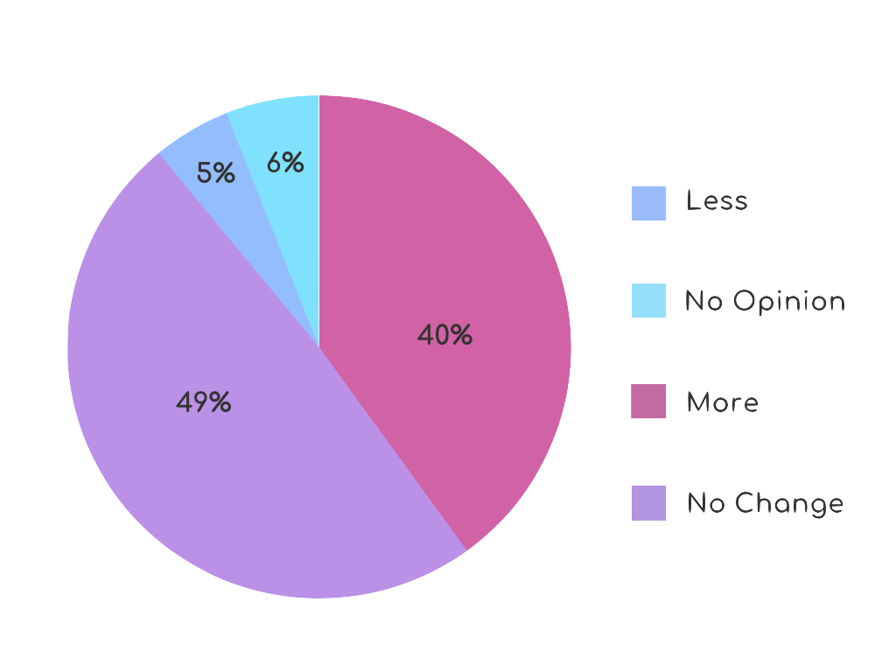
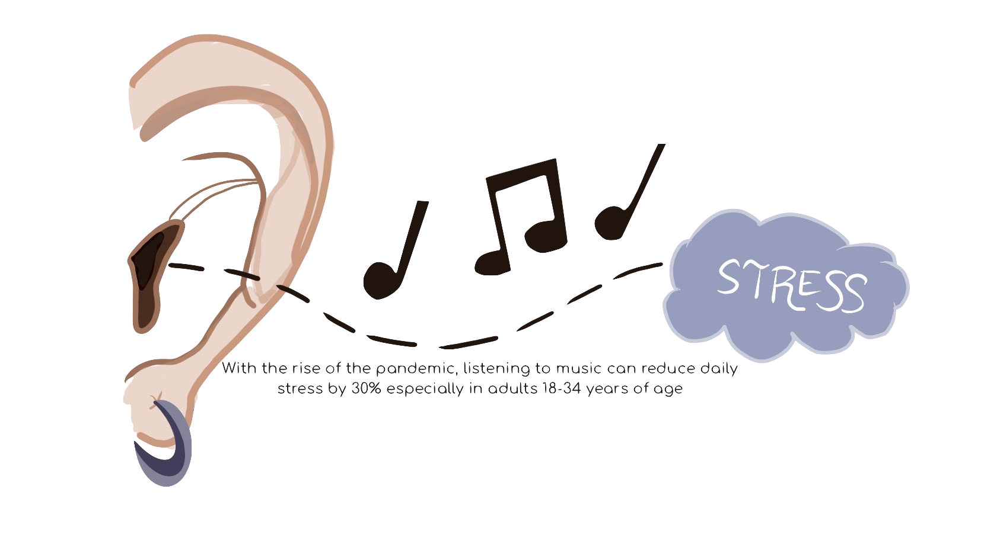

COVID-19 & Music
According to the New York Times, at the time of this writing in early December 2020, just over 63 million people in the world have been tested positive for the virus COVID-19. At least a million and a half have died from it. Some countries have fully eradicated the virus from their land while others, like the United States, have had their number of cases grow more by the day. In the U.S. there are over 15 million positive COVID-19 cases as of today. With these dangerous numbers and hospital ICU's at capacity, California is going into another shelter-in-place. All bars, salons, outdoor dining, and large gatherings are closed and prohibited. In one swoop almost everything we know in our routines is gone. When the world and our country are dealing with a pandemic, we as individuals still have to carry on, but how we do when everything that makes up our day to day life is gone and we still have to go to work and school?
This global pandemic mixed with the loss of day-to-day activities has put a tremendous burden on our mental health. Corinna Keenmon, MD, in a Healthline article said, "We know high-stress levels have a negative impact on both mental and physical health, particularly when the stress is this prolonged." These are unprecedented times as this pandemic and our shut down has been off and on for months now. Keenmon also said that 40% of Americans are going through depression related to the pandemic. This is why things, such as music, that help our mental health are so important now more than ever.
Music helps cope with stress
People around the world are turning to music as a coping strategy geared towards reducing the emotions that arise in response to stress. Music can be used as a source of emotional self care as well, to reduce or manage stress. Carly Caprioli a board certified music therapist at Northwell Health Cohne’s Children’s Medical Center states “Research shows that music helps us cope, allowing us to express and understand our feelings and explore what that feels like." She continues saying "....music is something that allows us to become aware of our emotional responses, feel those emotions entirely and then support us as we work through it.” Allowing music to evoke these emotions is a healthy way, for example when listening to music there are two hormones called dopamine - ‘the feel good' chemical and serotonin 'the happy' chemical that get released into your brain to boost your mood. Furthermore studies show that listening to music bring positive effects on health. Such as reducing your heart rate,blood pressure and anxiety and distract you from pain. If you are experiencing stress or anxiety, listen to music. Create your own playlist that you can listen to when you are feeling stressed. Music is a great coping mechanism for good mental health and overall well being.
The pandemic induced changes one of them being a shift in music consumption. A study of music consumption was conducted in late 2020, showing Adults who were willing to listen to new music durning the pandemic. Data shows 40% of adults would listen to more music, while 49% said no change in music consumption. 5% said less music consumtion and 6% of adults don't know. With music consumption increasing there’s been a change in people listening to certain genres. Focusing on spotify only analysis. Since the pandemic started Spotify users appear to be listening to more classical, ambient, country and children’s songs. Genres like Pop and dance music are unaffected. While people are listening to less latin, rap, and rock music.
Adults Listening to Music due to COVID-19
Listening to Music can Reduce Anxiety
